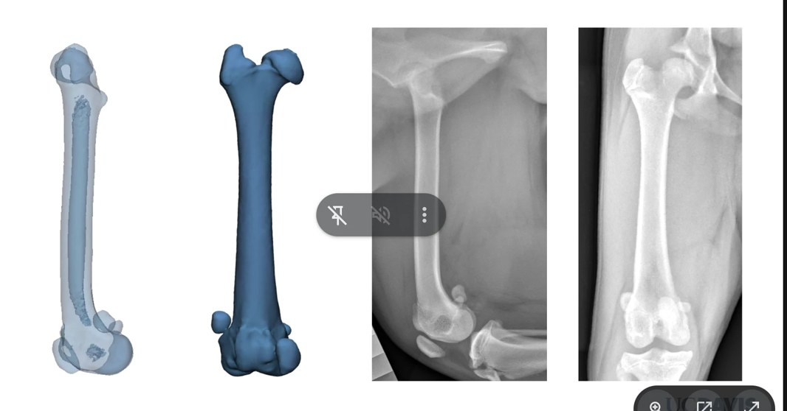
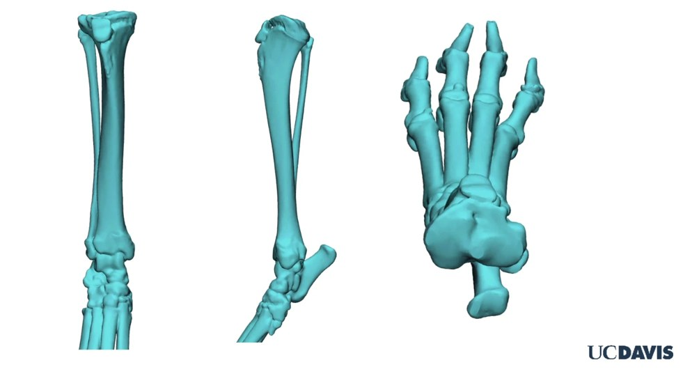
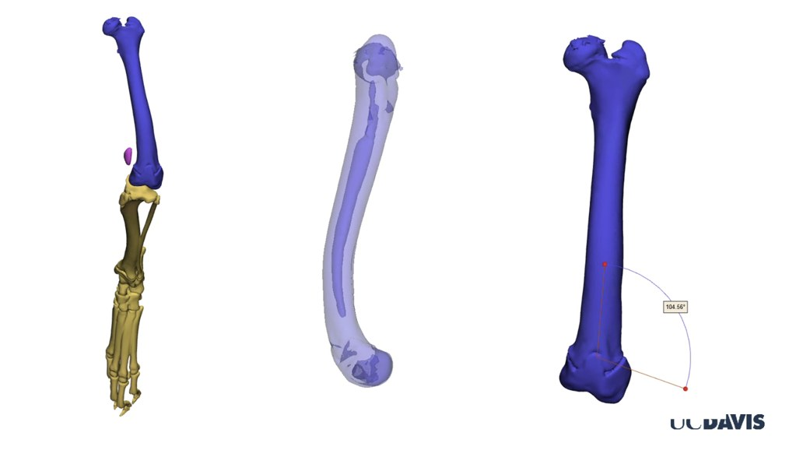
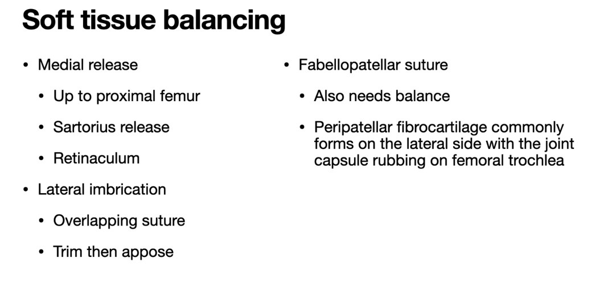
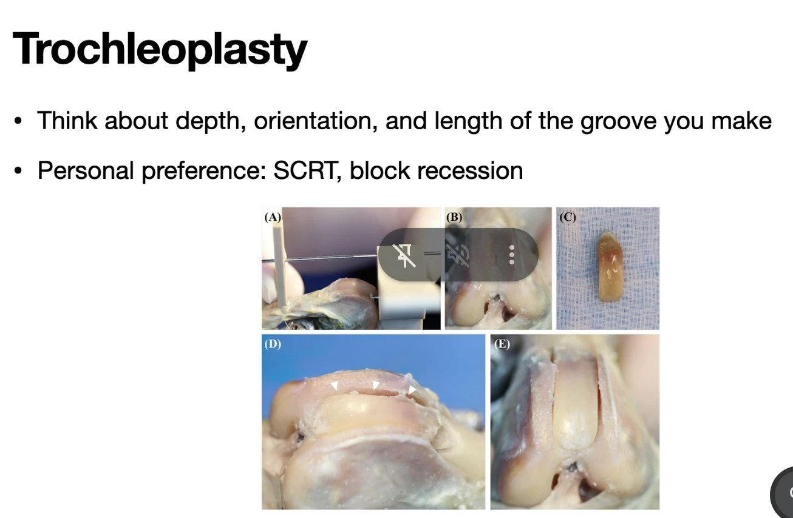
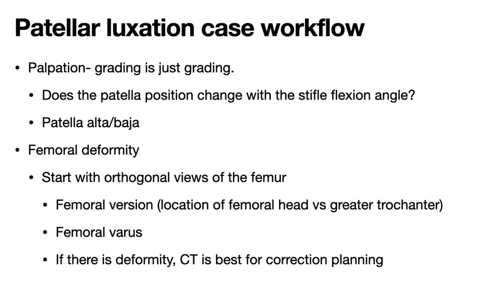
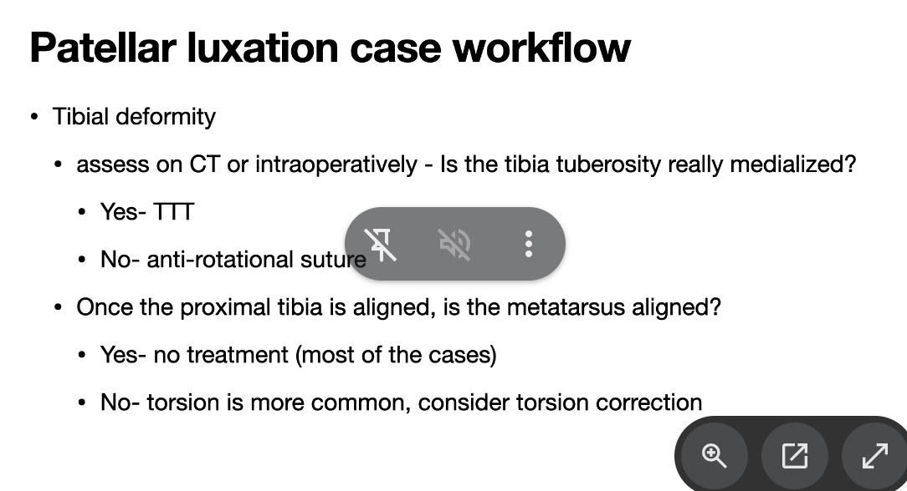
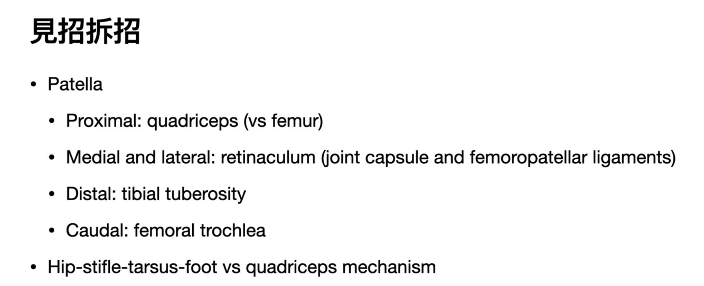

從診斷到治療 III：常見膝關節手術選擇與規劃
From Diagnosis to Treatment III: Common Knee Surgery Options and Planning｜講者：呂明 獸醫師（美國加州大學戴維斯分校助理教授；專長小動物外科、關節置換、關節手術）
2026 年 11 月 5 日｜聯盟獸醫教育中心 卓越講堂｜主持人：戴子綺 院長
資料來源標記：
📸 現場 課堂投影片截圖
💡 補充 整理者補充（教科書知識，非講者內容）
🎤 錄音 講者口述（Plaud 逐字稿）
23 張投影片截圖＋全場錄音（Plaud 逐字稿，含 Q&A）。逐字稿把講者誤記為「李醫師」，實為呂明醫師；錄音從第 2 張（骨科檢查）開始，第 1 張總覽沒有錄到。語音辨識常把術語聽錯（如 TPLO→TBL／TPO、tibial tuberosity→TB to Brasi、lateral suture→拉絡術），已依上下文更正，不確定處以 ❔ 標示。💡 是整理者補充，已依錄音修正與講者不同的地方。
23 張投影片截圖＋全場錄音（Plaud 逐字稿，含 Q&A）。逐字稿把講者誤記為「李醫師」，實為呂明醫師；錄音從第 2 張（骨科檢查）開始，第 1 張總覽沒有錄到。語音辨識常把術語聽錯（如 TPLO→TBL／TPO、tibial tuberosity→TB to Brasi、lateral suture→拉絡術），已依上下文更正，不確定處以 ❔ 標示。💡 是整理者補充，已依錄音修正與講者不同的地方。
⭐ 本場重點
- 膝關節問題分兩個關節看：股脛關節（CrCL）與股髕關節（髕骨脫位），另有 OCD、髕骨損傷（髕韌帶斷裂）、其他不穩定（CdCL、側副韌帶）
- CrCL 斷裂與髕骨脫位都非常常見，而且常同時存在
- 步態：跛行程度不一，受肢體排列、疼痛、慢性程度影響；慢性病例可以是機械性跛行（不痛但走路異常）
- 站立檢查兩側比較：關節積液、內側增厚（medial buttress）、肌肉萎縮、髕骨脫位
- 側躺檢查：前／後抽屜、脛骨推力、外展與內收、髕骨脫位
- CrCL 部分斷裂：表現較不明顯、間歇性跛行，抽屜只在屈曲時出現，因為尾外側束只在伸直時拉緊
- 保守治療只適合：偏瘦（BCS 4/9）＋ <15 kg ＋活動需求低＋飼主配合度高；就算全部做到，對側肢體可能負擔過重
- 保守治療用藥：carprofen 2.2 mg/kg BID；鎮靜 trazodone 5–7 mg/kg TID ± gabapentin 10–15 mg/kg TID ± acepromazine 0.5–2 mg/kg BID–QID
- 不適合保守：肥胖、年輕好動難限制、大型犬、雙側、嚴重不穩定、合併半月板撕裂
- TPLO vs TTA：Slocum 模型（關節反作用力沿脛骨軸 → 把平台角整平）vs Tepic 模型（反作用力平行髕韌帶 → 前移粗隆讓髕韌帶垂直平台）
- 系統性回顧：兩者都成功；TPLO 感染率可能較低、TTA 6 個月內 OA 分數較好；講者在意的是 TTA 植入物取出很麻煩
- Jeong 2021 活體實驗：跛行無差異，但 TTA 後 4/5 膝發生外側半月板撕裂、內側半月板病變與軟骨損傷都較多 → TTA 後殘存不穩定較多？
- 關節外側縫線（腓腸豆－脛骨縫線，MSU Dr. Flo）：繞腓腸豆或骨錨＋脛骨骨隧道；是縫線斷掉 vs 疤痕組織夠強的賽跑，太早斷就要重做
- 術後穩定度：截骨術（TPLO/TTA）仍有抽屜但脛骨推力應消失；外側縫線則無抽屜、無推力、活動範圍受限
- 術後活動：截骨術可每天走 3–4 次、每次約 10 分鐘再逐步增加；外側縫線要非常嚴格休息，避免縫線拉長或斷裂
- 髕骨脫位：分級、臨床症狀、跛行是因為疼痛還是生物力學？—「機械性跛行」
- 髕骨脫位用 CT 3D 重建看整肢變形：髕骨脫出滑車溝、股骨彎曲，遠端股骨角量到 104.56°（🎤 aLDFA，正常 94–97° → 股骨內翻）
- 病例流程：觸診分級「只是分級」→ 髕骨位置是否隨屈膝角度改變、高位／低位髕骨 → 股骨正交兩方向 X 光看扭轉與內翻，有變形用 CT 規劃矯正 → 脛骨粗隆真的內移才做 TTT，否則抗旋轉縫線 → 近端脛骨對齊後蹠骨還歪，多半是扭轉
- 軟組織平衡：內側放鬆（可到股骨近端、縫匠肌、支持帶）＋外側重疊縫合；腓腸豆－髕骨縫線也要平衡；滑車溝成形要想深度、方向、長度，講者偏好 SCRT、block recession
- 見招拆招：髕骨被四個方向約束——近端股四頭肌、內外側支持帶、遠端脛骨粗隆、尾側滑車溝；要分清楚是髖－膝－跗－足整肢排列還是股四頭肌機制的問題
- 🎤 單側 CrCL 斷裂後 1 年內 40–60% 對側也會受傷；保守治療需關籠 6–8 週，半月板撕裂造成的疼痛保守治療效果差
- 🎤 講者目前不做 TTA：殘存不穩定，加上感染時 cage／金屬泡棉植入物有骨長入、很難取出；小型犬也偏好 TPLO（外側縫線會限制活動度、終究會斷）
- 🎤 TPLO 術後如果連抽屜都沒有，要回頭想當初是不是真的有不穩定
- 🎤 aLDFA 正常 94–97°，104° 判定為股骨內翻；X 光擺位不正就會拍出假的內翻，股骨與脛骨常要分開拍
- 🎤 分級不決定要不要開刀，看臨床症狀與疼痛；脛骨粗隆真的內移（CT 脛骨平台三角形不正）才做 TTT
場次資訊
▾
- 主題：從診斷到治療 III：常見膝關節手術選擇與規劃（From Diagnosis to Treatment III: Common Knee Surgery Options and Planning）。
- 講者：呂明 獸醫師，美國加州大學戴維斯分校（UC Davis）助理教授；專長小動物外科、關節置換、關節手術。學歷：美國奧勒岡州立大學獸醫系碩士、國立台灣大學獸醫學系學士／臨床碩士。
- 主持人：聯盟獸醫教育中心負責人 戴子綺 院長。
- 形式：線上講座（2026-11-05）。
- 🎤 錄音：Plaud 分享連結（講者1＝呂明醫師，講者2＝主持人）。講者提到「上次有講」，這是「從診斷到治療」系列的第三講。主持人說這是有史以來大家最踴躍提問的一次。
1. 膝關節疾病總覽
▾
| 📸 投影片 | 中文 | 💡 補充 |
|---|---|---|
| Femorotibial joint (CrCL) | 股脛關節：前十字韌帶 | 犬最常見的後肢跛行原因；多為慢性退化性斷裂，常見雙側（另一側之後也斷的比例高）。 |
| Femoropatellar joint (Patellar luxation) | 股髕關節：髕骨脫位 | 小型犬多為內側脫位（MPL），大型犬也可見外側脫位；常合併 CrCL 斷裂。 |
| OCD | 剝離性骨軟骨炎 | 膝關節 OCD 好發於股骨外髁內側面，年輕大型犬，常雙側。 |
| Patellar injury — Patellar ligament rupture | 髕骨損傷：髕韌帶斷裂 | 多為外傷，或 TPLO 等手術後的髕韌帶炎／斷裂。 |
| Other instability (CdCL, collateral ligaments, etc) | 其他不穩定：後十字韌帶、側副韌帶等 | 單獨的 CdCL 斷裂少見，多為外傷造成的多韌帶損傷（膝關節脫臼）。 |
2. 理學與骨科檢查：CrCL 與髕骨脫位
▾
| 檢查階段 | 📸 投影片要點 |
|---|---|
| 整體 | CrCL 斷裂與髕骨脫位都非常常見。 |
| 步態 | 跛行程度不一，受肢體排列、疼痛、慢性程度影響；可以是機械性跛行。 |
| 站立檢查 | 兩側比較：關節積液、內側增厚（medial buttress）、肌肉萎縮、髕骨脫位。 |
| 側躺檢查 | 前抽屜與後抽屜、脛骨推力、外展與內收、髕骨脫位。 |
各項檢查怎麼做 💡
- 機械性跛行：慢性病例關節纖維化、內側增厚後，疼痛可能不明顯，但活動範圍受限、步態仍異常；典型例子是長期髕骨脫位造成的跳步（skipping）或膝關節無法完全伸直。
- 關節積液：站立時摸髕韌帶兩側，正常可清楚摸到髕韌帶邊緣；積液時邊緣變鈍、韌帶摸起來不清楚。
- 內側增厚（medial buttress）：慢性 CrCL 斷裂後，膝關節內側關節囊纖維化與骨贅形成，在脛骨近端內側摸到硬的隆起；兩側比較最明顯。
- 肌肉萎縮：大腿肌群（股四頭肌、腿後肌群）兩側比較，代表慢性、不願負重。
- 前抽屜試驗（cranial drawer）：一手拇指放在腓骨頭後方、食指放在脛骨粗隆，另一手拇指放在股骨外髁後方、食指放在髕骨；固定股骨，把脛骨往前推。脛骨相對股骨往前移動＝陽性。年輕動物正常會有少量移動但有明確停止點（puppy drawer）。
- 後抽屜：同樣手勢把脛骨往後推，檢查後十字韌帶（CdCL）。
- 脛骨推力試驗（tibial thrust / tibial compression test）：一手固定股骨遠端、食指放在脛骨粗隆，另一手將跗關節屈曲；腓腸肌拉緊時脛骨被推向前方，食指感覺到脛骨粗隆往前移＝陽性。比抽屜試驗不需要那麼放鬆，清醒動物也較容易做。
- 外展與內收：膝關節伸直時對脛骨施加內外翻力量，檢查內側與外側側副韌帶。
- 髕骨脫位：伸直膝關節並將腳掌內旋，用拇指把髕骨往內推（內側脫位）；外旋並往外推（外側脫位）。依可否自行復位、是否持續脫位分 I–IV 級。
講者怎麼做檢查 🎤
- 轉診來時常已帶著「十字韌帶」或「髕骨脫位」的診斷，講者仍然從步態、站立、側躺檢查照順序做，一邊想「這個病患的表現跟典型的一樣嗎？」，不相符就要想是不是漏了什麼。
- 步態：CrCL 跛行可輕可重，通常很明顯；慢性病例有疤痕組織穩定，仍會在快走、小跑時減少負重。
- 機械性跛行（髕骨脫位）：髕骨不在滑車溝正上方，股四頭肌收縮時不是直接伸膝，而是帶出內旋、內收，看起來很跛但不一定是疼痛。
- 這些狗大多至少會點地；急性期可能完全不著地，但來到門診時多已改善。也不應該摸到嚴重紅腫熱痛，不像骨折或外傷那麼嚴重。
- 關節積液：沿著髕韌帶兩側摸，正常是平的或凹下去，微微凸起就可能是積液。
- 內側增厚：脛骨平台內側摸到硬硬的疤痕組織，代表慢性不穩定、身體已經代償。
- 一定也要檢查髖關節與跗關節有沒有其他異常。
- X 光：正交兩方向，側位片膝關節與跗關節都擺 90°。講者看四件事：關節積液（髕下脂肪墊區應該灰黑，變白代表積液或關節囊增生）、脛骨前移（半脫位）❔、退化變化／骨贅，以及排除骨折、外傷、腫瘤。內側增厚在 X 光前後位上也可能看到關節內側的軟組織隆起。
3. CrCL 部分斷裂
▾
- 📸 部分斷裂比較不明顯，常是間歇性跛行。
- 📸 抽屜只在屈曲時出現：因為尾外側束（caudolateral band）只在伸直時拉緊。
兩條纖維束與屈曲時抽屜 💡
| 纖維束 | 伸直 | 屈曲 | 部分斷裂時 |
|---|---|---|---|
| 頭內側束（craniomedial band） | 拉緊 | 拉緊 | 部分斷裂最常斷的是這一束 |
| 尾外側束（caudolateral band） | 拉緊 | 放鬆 | 還完整 |
- 頭內側束斷了、尾外側束還在：伸直時尾外側束仍拉緊、擋住脛骨前移 → 伸直做抽屜是陰性；屈曲時尾外側束放鬆 → 才摸得到前抽屜。
- 所以懷疑部分斷裂時，抽屜試驗要在伸直、站立角度與屈曲三種角度都做，只在伸直做會漏掉。
- 部分斷裂多數會進展成完全斷裂，這也是很多外科醫師對部分斷裂也建議手術（如 TPLO）的理由；術前可配合關節鏡評估殘存韌帶。
X 光
- 📸 投影片下方是兩張膝關節側位片與兩張前後位片。
- 💡 CrCL 疾病在 X 光上看的是間接徵象：髕下脂肪墊被積液推擠變小（effusion sign）、關節周圍骨贅、脛骨相對股骨前移（不一定看得到）；X 光無法直接看到韌帶，部分斷裂時可能只有輕微積液。
- 🎤 部分斷裂不一定有上述 X 光變化；十字韌帶不是 X 光診斷，不能因為 X 光就說有十字韌帶受傷，最後還是要回到抽屜試驗。
- 🎤 講者的解釋與上表相同：頭內側束一直是緊的、通常先受傷；尾外側束只在伸直時穩定膝關節。所以屈曲時有抽屜、伸直時沒有，就可能是部分斷裂。
4. 內科保守治療還有角色嗎？
▾
| 項目 | 📸 投影片 |
|---|---|
| 病患選擇 | 偏瘦（BCS 4/9）＋體重 <15 kg＋活動需求低＋飼主配合度高，四個條件要同時成立 |
| 止痛 | NSAID：carprofen 2.2 mg/kg BID |
| 鎮靜（限制活動） | trazodone 5–7 mg/kg TID ± gabapentin 10–15 mg/kg TID ± acepromazine 0.5–2 mg/kg BID–QID |
| 結論 | 所有建議都照做的話可能有效，但對側肢體可能負擔過重⋯ |
- 🎤 講者自己也有保守治療成功的病例，但要很嚴格地挑病患。費用可能是飼主選保守的原因，但要讓飼主清楚知道哪些病患才比較有機會成功。
- 🎤 「活動需求」的例子：一兩歲、整天想往外跑的年輕狗，跟十三四歲、只出門上廁所的室內老狗，需求差很多。
- 🎤 符合條件的狗，關籠限制運動 6–8 週後，關節周圍組織有機會強到足以穩定膝關節。
- 🎤 鎮靜藥（trazodone、gabapentin、acepromazine）視狗的狀況使用，關籠容易焦躁的狗特別有幫助。
- 🎤 對側風險：左腳跛時右腳負重增加很多；研究統計單側發生後約 40–60% 在一年內對側也會受傷，保守治療若沒照建議做，對側風險可能更高。
- 💡 鎮靜藥的劑量是口服用；acepromazine 口服劑量明顯高於針劑，起始時從低劑量開始再調整。
不適合保守治療的情況

- 📸 以下情況保守治療效果不好：
- 肥胖
- 年輕、精力旺盛、很難鎮靜或限制活動的病患
- 大型犬或大型品種
- 雙側疾病
- 嚴重不穩定
- 合併半月板撕裂
- 🎤 很多飼主單側時覺得休息就好，等到雙側、狗不會走路了才帶來，這時保守治療更困難。
- 🎤 不穩定非常嚴重（膝關節根本是脫位狀態）的病患，保守治療也很困難。
- 🎤 疼痛如果來自半月板受傷，單純內科治療不太會有好效果。
5. 手術：TPLO 還是 TTA？
▾Slocum 模型 vs Tepic 模型

- 📸 兩種術式的差別在於對關節反作用力方向的假設：沿脛骨軸（Slocum）或沿髕韌帶（Tepic）。
| TPLO（Slocum 模型） | TTA（Tepic 模型） | |
|---|---|---|
| 💡 關節反作用力方向 | 大致平行脛骨長軸 | 大致平行髕韌帶 |
| 💡 前推力怎麼來 | 脛骨平台往後下傾斜，軸向力在斜面上分出往前的分力（脛骨前推） | 髕韌帶與平台不垂直時，合力有往前的分量 |
| 💡 手術目標 | 弧形截骨把平台旋轉到與脛骨軸接近垂直（TPA 約 5°） | 把脛骨粗隆往前移，讓髕韌帶在站立角度垂直於平台 |
| 💡 圖上看 | 左圖：平台從 Preoperative 虛線轉到 Postoperative | 右圖：髕韌帶從 Preoperative 移到 Postoperative，粗隆前移處有楔形空隙 |
兩種術式都是讓 CrCL 不再需要承擔前推力（動態穩定），而不是重建韌帶。
- 🎤 台灣常做 TPLO 與 TTA／MMP（講者：MMP 跟 TTA 是同一個概念）。講者對兩種模型的解釋與上表一致：Slocum 認為反作用力沿脛骨長軸，把平台調到與它垂直就不會把脛骨往前帶；Tepic 認為反作用力主要沿髕韌帶，把脛骨粗隆往前推到髕韌帶與平台垂直。
系統性回顧：TPLO vs TTA
![Surgical options - TPLO vs TTA：Wemmers AC, Charalambous M, Harms O, Volk HA. Surgical treatment of cranial cruciate ligament disease in dogs using Tibial Plateau Leveling Osteotomy or Tibial Tuberosity Advancement—A systematic review with a meta-analytic approach（Hannover）。Almost half of the studies were considered to provide low quality evidence；Both were considered successful options；TPLO may have had a lower SSI rate, while TTA had better OA scores up to 6 months；It matters to me, because TTA implant removal is NOT fun…；右側為 TTA 植入物與取出後的側位 X 光](photos/01-tplo-vs-tta-review-live.jpg)
- 📸 文獻：Wemmers、Charalambous、Harms、Volk（德國 Hannover 獸醫大學）對 TPLO 與 TTA 的系統性回顧與統合分析。
- 📸 將近一半的研究證據品質低。
- 📸 兩種術式都被認為是成功的選擇。
- 📸 TPLO 手術部位感染（SSI）率可能較低，TTA 在術後 6 個月內的 OA 分數較好。
- 📸 講者：感染率對他很重要，因為TTA 植入物取出一點都不好玩（右側 X 光：TTA 植入物，以及取出後的脛骨）。
- 🎤 講者記得約 43–47% 的研究證據品質低。
- 🎤 TPLO 感染了，等骨頭癒合後把骨板拆掉就好；TTA 的 cage、MMP 的金屬泡棉會有骨頭長進去，感染時可能要連一塊骨頭一起拿掉，再穩定剩下的骨頭。
- 🎤 右側 X 光就是他們上週的病例：TTA 術後感染，取出植入物；這隻還好沒有太不穩定，但中間骨頭沒長夠的病例需要更多 revision。
活體實驗：TTA 與 TPLO 術後的半月板撕裂
![Surgical options - TPLO vs TTA：Jeong J, Jeong SM, Kim SE, Lewis DD, Lee H. Subsequent meniscal tears following tibial tuberosity advancement and tibial plateau leveling osteotomy in dogs with cranial cruciate ligament deficiency: An in vivo experimental study. Vet Surg 2021 (doi 10.1111/vsu.13648)。Experimental in vivo study；No difference in lameness scores at any time point；Radiographic OA scores of TTA > TPLO at 12 weeks post op, no difference at 32 weeks post op；Subsequent lateral meniscal tears occurred in 4/5 TTA stifles；Medial meniscal pathology scores were higher in TTA stifles than in TPLO stifles；TTA stifles had more articular cartilage damage（Does this mean there is more residual instability after TTA?）](photos/01-tplo-vs-tta-meniscal-live.jpg)
- 📸 文獻：Jeong J、Jeong SM、Kim SE、Lewis DD、Lee H，Vet Surg 2021（doi:10.1111/vsu.13648），活體實驗研究。
- 📸 跛行分數在任何時間點都沒有差異。
- 📸 X 光 OA 分數：術後 12 週 TTA > TPLO，32 週時沒有差異。
- 📸 TTA 組 5 個膝有 4 個之後發生外側半月板撕裂。
- 📸 內側半月板病變分數 TTA 高於 TPLO；TTA 組關節軟骨損傷也較多。
- 📸 講者提問：這是否代表 TTA 術後的「殘存不穩定」較多？
- 🎤 研究由韓國外科醫師完成：同一隻實驗犬一腳做 TPLO、一腳做 TTA；之後部分犬犧牲，直接檢查關節內部。
- 🎤 術後持續有半月板與軟骨受傷，可能代表 TTA 不一定能完全消除不穩定。這和臨床觀察類似：上週移除植入物那隻也還有不穩定，只是跛行不明顯；仍有半月板傷害的病患未來 OA 風險更高。有同事遇到 TTA 後仍不穩定，會再做一台 TPLO（講者：看起來很恐怖，不建議嘗試）。
- 🎤 講者目前不做 TTA：TPLO 成功率較高、做得習慣；考量是殘存不穩定與感染時植入物取出麻煩。但他相信有些外科醫師也能把 TTA 做得很好。
- 💡 注意這篇與上一篇系統性回顧的 OA 結果方向相反（回顧是 TTA 6 個月內 OA 分數較好）；實驗研究樣本數很小，但能直接看關節內部。

小型犬做 TPLO 🎤
- 台灣病患多小型犬，TPLO 在小型犬容錯率非常低：可以打骨板的區域非常小，切完後剩下的脛骨粗隆可能也很小。
- 沒有明確的安全尺寸（幾公分、幾 mm 以上），講者看比例與骨頭形狀，盡量讓截骨線經過的點不要是脛骨粗隆最窄處，以免變成弱點。
- 很多人覺得小型犬做外側縫線就好，但 TPLO 在小型犬也有很好的功能結果；講者在小型犬仍比較喜歡 TPLO，因為外側縫線會減少活動度，線材終究會拉長或斷，太早斷就要重綁（major complication）。TPLO 癒合後就算要拆骨板，也不需要再做一次穩定膝關節的手術。
6. 關節外側縫線（Lateral suture）
▾
- 📸 腓腸豆－脛骨縫線（fabellotibial suture），由 MSU（密西根州立大學）Dr. Flo 推廣。
- 📸 縫線繞過外側腓腸豆或固定在骨錨上，另一端穿過脛骨骨隧道。
- 📸 這是一場縫線斷掉 vs 疤痕組織長到夠強的賽跑。
- 📸 縫線太早失效就必須重做。
- 📸 右圖是股骨端（FA–FE 放射狀格點）與脛骨端（TA–TD × 1–7 格點）附著點的組合，紅線連接 FD1 與 TB1、TA7。
- 💡 關節外縫線是被動穩定，不處理脛骨平台角；一般認為較適合小型、體重輕的犬貓。
- 🎤 失敗例：一隻德國狼犬做了外側縫線，縫線點位置不太正確，線已不完整，仍有嚴重脛骨推力 → 拆除縫線、改做 TPLO（講課當天稍後要進手術）。
- 🎤 講者在密西根問 Dr. Flo 為什麼選這兩個點，他說十字韌帶是後外側到前內側的走向，就找了類似的兩點：繞過腓腸豆、綁到脛骨。
- 🎤 右圖是講者幾年前在台大做的研究：找關節活動過程中長度改變最少的點（isometric point）。等長點可以減少線材反覆被拉長、收緊造成的疲勞，也最少影響膝關節活動度。結果是股骨端 FD1（腓腸豆遠端）配脛骨端 TB1 或 TA7（一個在伸趾長肌腱溝附近、一個在脛骨粗隆正後方 ❔）。
- 🎤 講者曾跟 Dr. Flo 一起開一隻黃金獵犬：外側綁兩條、內側也綁兩條，把膝關節綁得非常緊，再包紮兩週；觀念跟現在不同，但關節最後有穩定下來。大型犬扯斷縫線的機會較高，Dr. Flo 的策略就是綁更多條、更強力限制活動，讓組織結疤穩定。
7. 術後照護
▾
| 📸 截骨術（TPLO／TTA） | 📸 關節外側縫線 | |
|---|---|---|
| 術後膝關節穩定度 | 仍摸得到抽屜，但脛骨推力應該被中和 | 沒有抽屜、沒有推力，活動範圍受限 |
| 活動 | 籠內休養與限制運動；可以每天 3–4 次、每次約 10 分鐘牽繩散步，之後逐步增加 | 籠內休養與限制運動；非常非常嚴格的休息，避免縫線拉長或斷裂 |
- 🎤 有些病患做了 TPLO 後連抽屜都沒有，講者會反問：當初是不是真的有膝關節不穩定？
- 🎤 TPLO 術後時程：前 2 週安靜，只出門上廁所，其他時間關籠或小房間；第 2 週起每次走約 5–10 分鐘，之後每幾週增加步行長度；6–8 週拍 X 光確認癒合與骨板沒問題，才再增加活動量。
- 🎤 外側縫線：到 6–8 週仍盡量嚴格限制，因為疤痕組織還不夠強時把縫線扯斷，等於手術失敗（Q&A：至少 8 週嚴格限制）。
- 💡 為什麼截骨術後還有抽屜：TPLO／TTA 沒有重建十字韌帶，只是改變幾何讓負重時不產生脛骨前推力（動態穩定），所以被動推脛骨仍會往前移；術後檢查看的是脛骨推力試驗是否陰性。外側縫線是直接把脛骨綁住（被動穩定），所以抽屜也會消失。

- 🎤 病例：X 光有變化但十字韌帶完好。X 光看起來有關節積液、內側增厚，滑車溝近端與髕骨遠端也有骨贅，唯一沒看到的是膝關節半脫位。住院醫師覺得有一點不穩定就安排手術。
- 🎤 講者那邊手術一律先做關節鏡再接 TPLO。關節鏡下滑膜炎很明顯，但十字韌帶看起來 OK，探針檢查半月板也正常；發炎與積液是關節炎造成的，所以只做了關節炎的處置 ❔（逐字稿聽不清）。
- 💡 這個病例呼應第 3 節：X 光只看間接徵象，不能據此診斷十字韌帶斷裂。
8. 髕骨脫位（Patellar luxation）
▾
- 📸 討論重點：分級、臨床症狀、跛行是來自疼痛還是生物力學？—「機械性跛行」。
| 💡 分級 | 髕骨位置 | 常見表現 |
|---|---|---|
| I | 平常在滑車溝內；用手可推出，放手自己回位 | 多無症狀，觸診時偶然發現 |
| II | 平常在溝內；屈膝或用手可脫出，伸膝與旋轉脛骨才回位 | 間歇性跳步（skipping），踢一下腳後又正常 |
| III | 平常持續脫位，用手可推回，但放手又脫出 | 持續跛行或蹲伏步態，可能有骨骼變形 |
| IV | 持續脫位，用手推不回 | 膝無法完全伸直、嚴重骨骼變形、蹲伏或「O 型腿」步態 |
- 🎤 影片中的哈士奇是 IV 級外側髕骨脫位，機械性跛行非常嚴重；但動它的膝關節，髕骨沒有一直脫位、復位時，不一定很痛。這隻術後恢復很好，不需要做骨矯正手術。
- 💡 分級是看髕骨的位置，不等於症狀嚴重度：有的 II 級很痛、有的 IV 級幾乎不痛但走路異常。這就是講者問「疼痛還是生物力學」的意思——機械性跛行通常止痛藥沒效，要矯正的是排列。
髖關節與股骨前傾 🎤


- 🎤 講者認為有些病患的髖關節與髕骨會互相影響。一個原因是髖關節脫位：股骨往上半脫位，等於股骨長度不夠，股四頭肌機制變得很鬆。
- 🎤 另一個原因是股骨近端前傾（anteversion）異常：正常股骨頭應該在大轉子的前側，側位片上可以在股骨前緣看到一點股骨頭；這組圖的狗股骨頭偏後。這類狗站立時會把股骨轉到讓股骨頭朝前、大轉子朝後，滑車溝就跟著轉向外側，發生髕骨脫位很合理。
- ❔ 右側視角黃圈的對應結構（股骨頭或髕骨）以投影片標示為準；第二張投影片標的是 Patella。
X 光擺位與兩個 CT 病例 🎤
病例 1：幼犬，雙側內側髕骨脫位（生長板未閉合，CT 上兩側髕骨都往內）
- 📸 下一張是兩側後肢的 CT 3D 重建（股骨與脛骨／足部分色），一側股骨與脛骨看起來明顯彎曲。（圖檔待補）
- 📸 接著是右腳兩種擺位的前後觀對照：左邊股骨直、膝關節與足部排成一直線；右邊股骨看起來明顯彎曲。（圖檔待補）
- 🎤 重點是擺位：左邊擺正時看不出明顯內翻；換成右邊的角度，不是骨頭真的畸形，而是擺位讓股骨拍起來像嚴重內翻。
- 🎤 怎麼判斷正不正：左圖股骨是正的，因為兩側股骨髁大小差不多；但它的跟骨往外轉，正常跟骨應該幾乎被脛骨擋住。右圖脛骨比較正，股骨卻不正。髕骨脫位的狗常沒辦法一張片同時把股骨和脛骨都擺正，要分開拍股骨、分開拍脛骨，才能判斷有沒有嚴重骨骼變形。

- 🎤 股骨：拉到最正，先看內翻或外翻，也就是股骨長軸與遠端關節面的夾角（aLDFA），正常大約 94–97°；超出範圍才考慮矯正，通常是比較嚴重才調整。
- 🎤 前傾：側位片（股骨髁要重疊）看股骨頭是否在大轉子、長軸的前側。這隻的股骨頭稍微在長軸前側，前傾算正常（雖然沒有很好的參考值），也沒有明顯內外翻 → 不需要股骨截骨。

- 🎤 脛骨前後位：要看得到髁間隆起的近端；脛骨要擋住跟骨，跟骨應該在跗關節 M 形關節面的外側一半。沒有明顯內外翻。
- 🎤 脛骨側位：距骨的兩個滑車要重疊，再看有沒有脫位或骨骼變形；這隻都沒有。
- 🎤 最後在 CT 上看脛骨平台的三角形（X 光拍不到這個視角）。講者的原則：脛骨粗隆真的往內跑了才需要 TTT；三角形是正的就不做。

病例 2：比較極端的髕骨脫位（脛骨粗隆整個往內轉，跟髕骨脫位後的位置很接近）
- 🎤 股骨：中間圖的股骨頭大約在股骨長軸正中央，沒有正常的前傾；量 aLDFA 104°（正常 94–97°）→ 有股骨內翻，也有股骨扭轉問題。
- 🎤 處置：做手術導板（surgical guide），單一斜向截骨，旋轉的同時調整扭轉。術後股骨頭跑到長軸前面（想要的位置），原本的內翻也被調直。截骨方式有好幾種，超出這次範圍。
- 🎤 脛骨：近端擺成正的前後位時，遠端是往外轉的；skyline 視角也看到脛骨平台三角形不正 → 考慮 TTT，並因為有扭轉變形，也把它轉回來。
- 🎤 為什麼脛骨會外轉：嚴重髕骨脫位把脛骨整個往內旋，但狗走路時跗關節沒有內轉那麼多，代表它在生長過程中脛骨已經代償、想把腳長正。這時如果只把脛骨近端往外拉回來，遠端的外旋就會變得非常嚴重。所以這隻也做了去旋轉截骨，把腳掌轉回約 30°。
- 🎤 術中：在髕韌帶側邊做關節切開進去，髕骨離正常位置很遠，但白色的髕韌帶還分辨得出來；慢慢往上撥，不要把股四頭肌分開，要從側邊打開。
- 🎤 手術導板：清出骨頭表面放上透明導板，術中就能找到電腦模擬的截骨面與旋轉角度；用 reduction guide 讓 pin 對到同一角度，再打骨板固定，就完成變形矯正。
軟組織平衡

| 做法 | 📸 投影片 |
|---|---|
| 內側放鬆 | 可以一路放到股骨近端；縫匠肌放鬆；支持帶 |
| 外側緊縮（imbrication） | 重疊縫合；或修剪後再對合 |
| 腓腸豆－髕骨縫線 | 也要注意平衡；外側常形成髕骨周圍纖維軟骨，因為關節囊在股骨滑車上摩擦 |
- 🎤 講者喜歡叫它「平衡」：內側放鬆或外側緊縮做太多，可能把內側脫位變成外側脫位。
- 🎤 內側放鬆要確認沒有任何東西還在把髕骨往內拉；有些外科醫師會把縫匠肌長頭直接放鬆；支持帶常常很緊，也要放開。內側不一定縫回去，多縫一針可能又增加緊度。
- 🎤 外側緊縮兩種方式：重疊縫合（如 vest-over-pants、Mayo 縫合），或修剪後直接對合。
- 🎤 這幾年比較常做腓腸豆－髕骨縫線：繞過腓腸豆，綁在髕骨側邊。小型犬用 Prolene 或尼龍 ❔，大型犬多用釣魚線。內側脫位的病患外側關節囊在滑車上長期摩擦，會形成髕骨周圍纖維軟骨，這種組織比較不會被拉長，講者通常直接把縫線綁在這個位置。
- 💡 內側脫位時內側軟組織（關節囊、支持帶、縫匠肌頭側部、股內側肌）攣縮、外側被拉長；內側放鬆、外側收緊是讓髕骨回到中線後兩側張力平衡，但軟組織手術單獨做通常不夠，要配合骨的矯正。
滑車溝成形術（Trochleoplasty）

- 📸 做滑車溝時要想清楚溝的深度、方向與長度。
- 📸 講者個人偏好：SCRT、block recession（塊狀加深）。
- 🎤 講者會先看髕骨在關節活動範圍中相對滑車溝的位置，再決定做多深、多長和方向。
- 🎤 SCRT＝semi-cylindrical recession trochleoplasty（半圓柱形滑車加深）：用圓筒形的鋸（圖 A 是導引蓋），鋸完是圓形（B），中間的軟骨片取出（C）後再往下挖幾 mm、放回去，就能加深滑車溝。講者說這只是省時間，不是非它不可；沒有這套工具時，他最常做的是 block recession。
- 💡 block recession 是把滑車軟骨連同下方骨頭切成長方塊取出、加深底部再放回，保留關節軟骨面；和 wedge recession（楔形）相比，溝的近端也能加深、留給髕骨的接觸面較多。
- 💡 「長度」很重要：大型犬常有高位髕骨，溝若不夠往近端延伸，伸膝時髕骨仍會跑出溝外。
髕骨脫位病例流程


| 步驟 | 📸 投影片 |
|---|---|
| 1. 觸診 | 分級只是分級。要看：髕骨位置會不會隨膝關節屈曲角度改變？有沒有高位／低位髕骨（patella alta／baja）？ |
| 2. 股骨變形 | 先拍股骨正交兩個方向的 X 光： ・股骨扭轉（看股骨頭相對大轉子的位置） ・股骨內翻 ・有變形時，CT 是規劃矯正的最佳工具 |
| 3. 脛骨變形 | 在 CT 上或術中評估：脛骨粗隆真的內移了嗎？ ・是 → TTT（脛骨粗隆移位術） ・否 → 抗旋轉縫線 |
| 4. 遠端排列 | 近端脛骨對齊後，蹠骨也對齊了嗎？ ・是 → 不用處理（大多數病例） ・否 → 扭轉比較常見，考慮做扭轉矯正 |
- 🎤 分級可以讓講者知道髕骨狀況與術中要放鬆多少，但不代表需不需要手術；要不要開刀看臨床症狀與疼痛。像影片那隻哈士奇雖然機械性跛行不痛，但體型大還是建議手術；整天在家的茶杯犬，就要跟飼主討論是否真的需要，因為生活品質可能影響不大。
- 🎤 理學檢查除了分級，還要摸髕骨相對滑車溝是偏高還是偏低。影像上先看有沒有股骨變形：側位片股骨髁要重疊，看股骨頭是否在長軸前側（判斷扭轉）；再看前後位有沒有內外翻。（錄音到這裡中斷，接 Q&A）
- 💡 「脛骨粗隆真的內移嗎」：很多內側髕骨脫位的脛骨粗隆看起來偏內，其實是脛骨內旋造成的假象；粗隆本身位置正常時，移位粗隆反而會造成過度矯正，所以講者改用抗旋轉縫線控制旋轉。
- 💡 高位髕骨在大型犬內側脫位常見，屈膝時髕骨才進入滑車溝；低位髕骨則可能是過去手術（如粗隆移太遠）的結果。
見招拆招：髕骨的四個方向

| 方向 | 📸 約束髕骨的結構 | 💡 對應的處理 |
|---|---|---|
| 近端 | 股四頭肌（相對於股骨） | 股骨內翻／扭轉 → 股骨矯正截骨（DFO）；股四頭肌攣縮 → 放鬆 |
| 內側與外側 | 支持帶（關節囊與股髕韌帶） | 軟組織平衡：內側放鬆、外側緊縮、腓腸豆－髕骨縫線 |
| 遠端 | 脛骨粗隆 | 粗隆真的內移 → TTT；否則抗旋轉縫線 |
| 尾側 | 股骨滑車溝 | 滑車溝成形（SCRT、block recession） |
- 📸 要分辨問題出在髖－膝－跗－足的整肢排列，還是股四頭肌機制（股四頭肌－髕骨－髕韌帶－脛骨粗隆這條拉力線）本身。
- 💡 整理成一句：哪個方向的約束出問題，就矯正那個方向；前面的病例流程（股骨→脛骨粗隆→遠端扭轉）與軟組織平衡、滑車溝成形，正好對應這四個方向。
9. Q&A
▾問題由主持人從「問與答」唸出，逐字稿只錄到講者的回答，題目是整理者依回答內容還原。
Q1. TPLO 後小型犬的內旋不穩定（pivot shift）怎麼辦？要不要同時加外側縫線？
🎤 機率好像真的比較高：術中做完 TPLO 一開始沒有推力，放到內旋再測又有。但講者經驗是很多小型犬 TPLO 後走得非常好，鎮靜下內旋時有推力，鎮靜解除後就沒有。所以他目前很少 TPLO 同時加外側縫線；恢復後真的有 pivot shift 跛行才考慮補做，或先做復健把外側肌肉練強，沒改善再做外側縫線。
Q2. 同時有十字韌帶斷裂和內側髕骨脫位？
🎤 一樣評估髕骨脫位的問題在哪；有股骨問題就做截骨矯正。最常見的做法是多加一條外側縫線處理脛骨旋轉 ❔，或用可以稍微彎折的骨板做改良式 TPLO：讓近端片段偏內、脛骨粗隆偏外。
Q3. 貴賓犬同時有內側和外側髕骨脫位？
🎤 講者會叫它 patellar laxity（髕骨鬆弛），不一定是往內或往外拉。很可能骨頭不歪，而是骨頭長度、髕骨的位置不對。例：一隻狗股骨長度不夠是因為髖關節脫位，把髖關節復位或做關節置換後，髕骨反而變緊、可以復位，不需要做髕骨手術。要依病患個別設計。
Q4. 貓的膝關節多韌帶斷裂？
🎤 稱為 deranged stifle，內外側副韌帶、前後十字韌帶都可能受傷。盡量重建能重建的部分，用 screw-washer 或 suture anchor；比較少用骨隧道或 FiberWire，因為感染風險稍高，且線材會把骨頭磨出更大的洞。同時加上鉸鏈式外固定器（股骨到脛骨，保留部分活動度）；不建議內固定（長骨板或跨關節 pin）。
Q5. 髕骨滑車置換（PGR）？
🎤 只用在正常組織已完全無法恢復、關節軟骨非常不健康或已經沒有軟骨的狀況。有些廠商大力推廣「所有髕骨脫位都做 PGR」，講者不同意：永久植入物要符合一定條件才做，感染或併發症時沒有調整的餘地；也發現髕骨會慢慢被磨掉，臨床意義還不清楚。
Q6. 高位髕骨要把脛骨粗隆往遠端移多少？
🎤 沒有什麼 rocket science：移一點、推推看髕骨會不會脫位，不夠再移一點，到不會脫位的位置就固定。移太遠端超過滑車範圍，反而也會不穩定。
Q7. X 光前後位的股骨－脛骨關節間隙有參考意義嗎？
🎤 有一篇研究發現內側間隙變小可能與內側半月板受傷相關，但相關性不明顯。人醫是站立拍片，臨床意義可能較大；講者認為有參考意義，但不是黑白分明。
Q8. 外側縫線最多放幾條？
🎤 最多是跟 Dr. Flo 那次（外側兩條、內側兩條）；講者自己最多兩條。腓腸豆－髕骨縫線最多也兩條，因為不知道腓腸豆能承受多少，繞太多條會不會讓腓腸肌腱變鬆也難說。
Q9. 外側縫線術後的半月板撕裂發生率？
🎤 很難說，因為很少病患會再做關節鏡或關節切開去看。講者自己的病例（外側縫線或 TPLO），只要膝關節穩定度 OK，半月板撕裂率都蠻低；關鍵是術後穩定度，不一定是術式。
Q10. 外側縫線術後多久恢復正常活動？
🎤 至少 8 週嚴格限制運動，避免線材提早斷裂、膝關節又不穩定。
Q11. CT 量角度時怎麼決定股骨的正前方？
🎤 看軟體，也要看股骨形狀（有些股骨有單側股骨髁增生，不好直接判斷）。講者的方法：股骨髁對齊（側位）後轉 90°，兩側股骨髁應該一樣大。
Q12. 後肢 CT 怎麼擺位？
🎤 目前開始做站立 CT，可能最接近臨床站立時的狀態，但還在分析。一般都是仰躺、後肢往後伸展，不一定維持 90°/90°；CT 主要看骨頭本身有沒有變形，關節之間的活動度還是靠臨床視診。
Q13. 高位髕骨：脛骨粗隆遠端移位還是股骨縮短？
🎤 講者正在寫相關計畫。到底是股骨太長還是脛骨粗隆太近端？他個人（完全沒有實證）認為股四頭肌可調整的延展度比髕韌帶高（髕韌帶長度固定），所以偏好脛骨粗隆遠端移位；目前有研究計畫比較兩者。Kishimoto 等人兩者同時做也成功矯正。講者對股骨縮短的效果不太確定。
Q14. CT 怎麼量脛骨扭轉？
🎤 有人只看脛骨本身，有人看近端脛骨到蹠骨的角度。正常狗的跗關節以下會往外旋約 25°（課本說是跑步時不會踢到前腳）。講者用第 3、4 蹠骨之間的連線看前後是不是直的，覺得臨床上比較有幫助；最近有兩篇論文在研究這件事。
Q15. Gabapentin 用兩週後變得呆傻、甚至不吃？可以跟 meloxicam 併用嗎？
🎤 講者現在不太把 gabapentin 當止痛藥，主要用它的鎮靜效果，起始劑量 10–15 mg/kg。有些狗確實會變呆、比較鎮靜，不吃有點誇張，要確認是不是 gabapentin 造成。可以和 meloxicam 等 NSAID 併用。超過 15–20 mg/kg 或老狗比較常見後肢無力，所以越來越少用。
Q16. TPLO 術中腓骨骨折怎麼處理？
🎤 如果 TPLO 固定有骨片間加壓、是穩的，腓骨骨折通常會自己癒合；很大型的狗擔心的話可以多打一片骨板。有些病患有嚴重的腓脛骨癒合（近端腓骨與脛骨融成一塊），會讓脛骨旋轉困難（有論文研究過），有人會去做腓骨截骨讓它能旋轉，等於人造骨折；只要原本固定是穩的就沒問題。
Q17. 股骨縮短 vs 脛骨粗隆遠端移位：關節壓力增加和脛骨粗隆骨折的疑慮？（佩佩學姊）
🎤 股骨要縮多少、會不會反而讓髕骨太鬆，都很難說，多是推測，也因病患而異。講者會先看是單側還是雙側：他那隻是單側，就用另一腳的脛骨粗隆位置當參考，拉到一樣的位置，關節壓力就不太會增加太多。粗隆骨折風險主要和骨片大小、固定方式、pin 的粗細有關；pin＋張力帶做好、有良好加壓，骨折風險應該不高。
講者：很喜歡跟大家討論這些，有想討論的病例可以再找他。